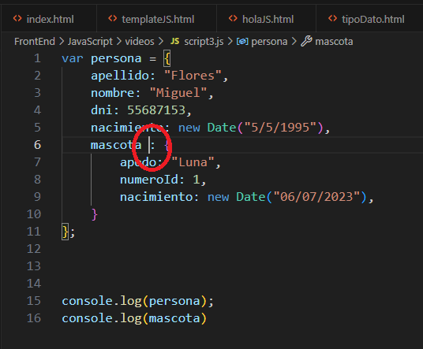

JSON significa JavaScript Object Notation, que es una forma de representar datos usando pares de clave-valor y arreglos.
Los Json son la manera de interpretar, procesar y/o manejar objetos dentro de js. Hay 2 o 3 maneras de declarar un Json. Veremos las 2 más comunes. Dentro de ellas tiene una sintaxis del tipo key:value.
Se define al declarar una variable entre { }.
F12 para ver:
Hacemos algunos cambios en el código:
Y agregamos un nuevo console.log para ver el objeto mascota que creamos en nuestro script.
VolverEn el siguiente script asociamos el objeto mascota a persona:
Métodos de JSON: